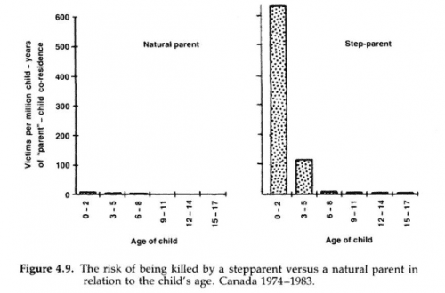
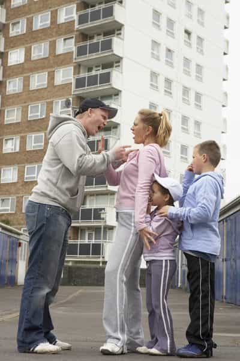

Rod Berne is a student, writer, and thought criminal. His columns run every Saturday. Follow him on Twitter.


Today, divorce rates are at an all time high. With the advent of no-fault divorce in the 1970s, more and more marriages destabilized, leaving millions of children to fend for themselves in broken homes. A fact that is still not well-known is that approximately 70% of divorces are initiated by women. This article focuses on how these women have created a generation of children who have been abused, and how this may help explain the rise of recent SJW-style leftism.

In the United States, the divorce rate has hovered between 40-50% over the last several decades. For historical comparison, divorce rates went from less than 3% to almost 7% from the late 1800s to the late 1960s.
Divorce was practically unheard of before the 1970s, and divorcees were shunned and treated like pariahs. Social shaming helped to keep families intact and children living with their birth fathers.
Yet the rise of no-fault divorce, in which the ending of a marriage does not require a showing of wrongdoing or reason by either party, completely changed the landscape for families. One unintended consequence is the manner in which children have been raised. Several studies have investigated the outcomes for children raised in various environments and unearthed disheartening realities.
One direct effect of divorce are the rising numbers of children who have been physically, sexually, or emotionally abused by adults. All types of child abuse have skyrocketed since 1980. For children, the odds of being murdered by a stepparent or their mother’s boyfriend is anywhere from 100 to 700 times greater than being murdered by their birth father.
If we extrapolate this data over multiple decades, it is possible that women, who initiate the overwhelming majority of divorces, have caused the deaths of many thousands of children. Women’s desire to be free from their marriage in order to remarry a man who has no blood relation to their children has led to enough corpses to fill several cemeteries.
She’s ready for round 2 on the cock carousel.
In another study, researchers found that compared to children living with married biological parents, the children living with a single parent who had a live-in partner were at least eight times more likely to be maltreated in some way. Moreover, they were 10 times more likely to experience abuse and eight times more likely to experience neglect.
In other words, women are inviting strange men into their homes to allow them to terrorize their children. It is also likely that the type of men women are often attracted to are also the type of men likely to show aggression or be violent, even toward small children.
For women who do not have a live in partner, they often bring strange men into their homes not knowing what the man is capable of. In fact, a woman’s innate desire for thrill and danger puts her children’s safety at risk, merely so she can feel the excitement of having a criminal’s penis inside of her.
Furthermore, men who are not biologically related to a woman’s children do not feel a connection to them. This can be easily understood through an evolutionary lens. While appealing to evolution does not make an act right or moral, it can help cast light on why, for example, a male lion that takes over a pride kills the cubs of the previous leader before mating with the lionesses.
This is known as the “Cinderella effect” in evolutionary psychology. Stepparents who are not biologically related to children are more likely to either mistreat them, abuse them, or neglect them in such a way that leads to their death. One interesting study found that stepparents are less likely to buckle their stepchildren with a seatbelt before driving.

In a study in England, researchers compiled data on intact families in which children live with birth parents compared to other family configurations. Here is what they found:
As we can see, the destabilization of families has caused a generation of people who have not been raised in intact families, and many have been victims of abuse. The choice of women to initiate divorce immediately multiplies the statistical odds of her children being harmed or killed. Yet women continue to file for divorce at astronomical rates, not out of malice or ill-intent, but simply because they require the guidance of men in order to maintain societal order.
This new phenomenon helps to explain SJW-leftism. These individuals did not grow up in a traditional home environment with a mother and birth father. They did not receive proper care and attention as children, and a sizable percentage of them were fondled by the multiple boyfriends of their mothers or observed as their mothers brought a new boyfriend into their home every week.
The alternative life choices of their mothers has caused a rift in the psyche of SJWs and damaged their ability to function sexually. The next time you see a protestor screaming about the patriarchy, you can rest assured that their mother made choices guided by her desire for bad-boy cock, rather than the love of her children.